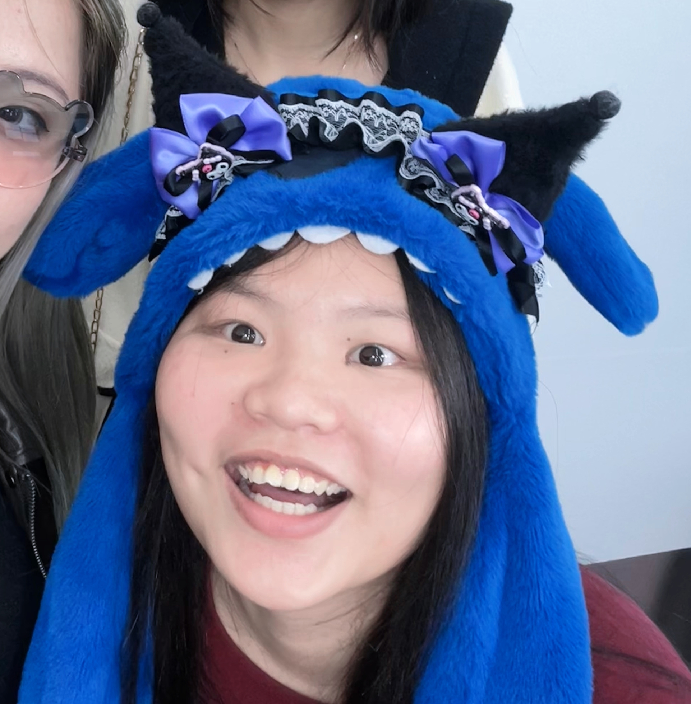
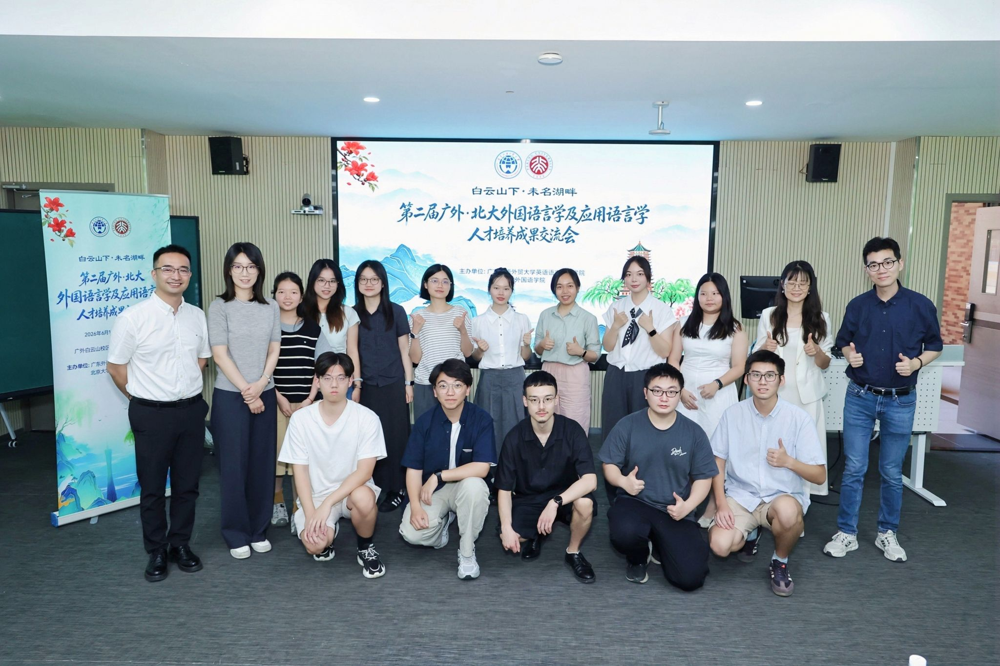

About Me
Here is a virtual greeting from Yu. 余思烨 is my Chinese name, pronounced /y³⁵ sɨ⁵⁵ jɛ⁵¹/ in Mandarin, or Jyu Szeyip /jyː²¹ siː⁵⁵ jiːp̚²²/ in Cantonese. It's absolutely fine to just call me Yu alternatively. I am from Jiangmen, Guangdong, and I am proud to be a Taishanese.
I am currently an undergraduate student in the English (Linguistics Talent Program) at the Faculty of English Language and Literature, Guangdong University of Foreign Studies (GDUFS). I am broadly interested in formal syntax.
My research experience spans corpus-based discourse analysis, child language data transcription and annotation, and a syntax paper on emerging Mandarin internet slangs.
My Research
I study how sentences are built. My undergraduate work looks at how non-core arguments are introduced in emerging Mandarin internet slang constructions such as dǎkǎ wǎnghóng diàn (打卡网红店, "check in at an internet-famous shop"). Based on the relationship between the two arguments, I propose two mechanisms: (1) the core argument merges with the verb root via incorporation, forming a complex verb that assigns accusative case to the non-core argument; (2) for non-core arguments bearing locative or goal thematic roles, an empty preposition yú (于) introduces the argument and assigns it an oblique case.
Updates
News
- [Sep. 2026] I have accepted the offer from Institue of Modern and Linguistics, Fudan University.
- [Aug. 2026] I built a small bilingual formal-linguistics lexicon, Formal Linguistics Lexicon For Starter, with term origins, standard definitions, and references in both Chinese and English.
- [Aug. 2025] My abstract Introducing Non-core Arguments in Mandarin Emerging Internet Slangs was accepted at the 8th International Forum "Towards New Descriptivism" & the 5th World Conference on Chinese.
- [Aug. 2025] I attended the summer Linguistics institute of China (中国语言学书院) at Beijing Institute of Technology.
- [Mar. - Aug. 2025] I served as a remote research assistant in the Early Trilingual Development Project at the Chinese University of Hong Kong.
- [Aug. 2024] I attended the summer school at Fitzwilliam College, University of Cambridge, with the highest university public-funding visiting scholarship.
- [Dec. 2023] I completed the "Challenge Cup" research project and was awarded the university-level Outstanding Work title.
Experiences
Education
-
B.A. in English (Linguistics)
Faculty of English Language and Literature, Guangdong University of Foreign Studies | 2022 - present
"Merit Student" for two consecutive years.
Fellowships and Scholarships
- Highest University Public-Funding Visiting Scholarship, Guangdong University of Foreign Studies, 2024.
- University-level "Merit Student" (三好学生), 2023 & 2024.
Research
-
Research Assistant, Early Trilingual Development Project,
Department of Linguistics and Modern Languages, Chinese University of Hong Kong
| Mar. 2025 - Aug. 2025 (remote)
Completed about 200 hours of video transcription, data annotation, and phonetic analysis of developmental language data from trilingual children in Guangzhou and Hong Kong. -
Student Researcher, "Challenge Cup" Project
| Dec. 2023 - 2024
Built a roughly 100,000-word diachronic corpus and conducted a historical discourse analysis of public comments on the delayed retirement policy; awarded university-level Outstanding Work.
Volunteering
-
Translator, World Athletics officials, 2025 World Athletics Relays
| 2025
Served as a translator for World Athletics officials during the 2025 World Athletics Relays. -
Multilingual Volunteer, APEC 2026 First Senior Officials' Meeting (SOM1) and related meetings
| 2026
Assisted the events as a multilingual volunteer.


Tools and Skills
- CLAN, R, SPSS, AntConc.
- Corpus construction, transcription, annotation, statistical analysis, and concordance search.
Publications
Introducing Non-core Arguments in Mandarin Emerging Internet Slangs
Yu Siye
Accepted abstract, 8th International Forum "Towards New Descriptivism"
& the 5th World Conference on Chinese, 2025.
This work analyzes a special construction in emerging Mandarin internet slang, namely "verb root + core argument + non-core argument" (e.g., 打卡网红店, "check in at an internet-famous shop"). I argue that non-core arguments are introduced by two mechanisms: (1) the core argument incorporates into the verb root, forming a complex verb that assigns accusative case to the non-core argument; (2) non-core arguments bearing locative or goal thematic roles are introduced by an empty preposition yú (于), which assigns them an oblique case.
I presented this work at the 2nd GDUFS-PKU Exchange on Foreign Linguistics and Applied Linguistics (第二届广外-北大外国语言学及应用语言学人才培养交流活动) - my second time attending.


联合学术报告会合影
Misc
Brooklyn99 the best comedian series ever PERIOD.
Sports
I love playing volleyball and tennis. With my friends, I took 3rd place in my college's volleyball bumping contest - just 5 bumps short of 1st place!

I am a competitive sports fan: I follow F1 (supporting Lewis Hamilton, Lando Norris, and Kimi Antonelli), middle-distance and marathon running, volleyball, and tennis. In athletics I root for Sydney McLaughlin and Jakob Ingebrigtsen, and I love watching the Hakone Ekiden.
I once ran a half marathon with a personal best of 2:55; a knee injury has paused my running for now, but I remain a dedicated spectator. I translate running-related videos between Chinese/Japanese and Chinese/English on Bilibili.

I support every player on China's national volleyball and tennis teams, and I also admire Carlos Alcaraz, Novak Djokovic, and Naomi Osaka. In volleyball, I love the setter Antoine Brizard of the Panasonic Panthers.
Campus Cats
I run an Instagram account for the cats on the north campus of GDUFS: @catsingdufs_north. Follow us for daily cat updates!


For fun...
- A big fan of Brooklyn Nine-Nine.
- Also a big fan of the campus cats.
- Volleyball, tennis, F1, and marathon runner at heart.